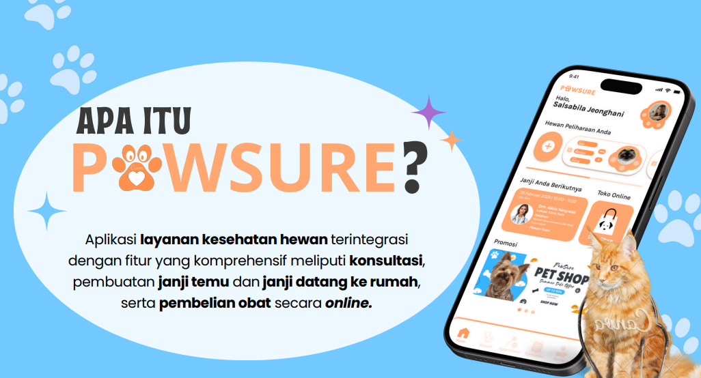
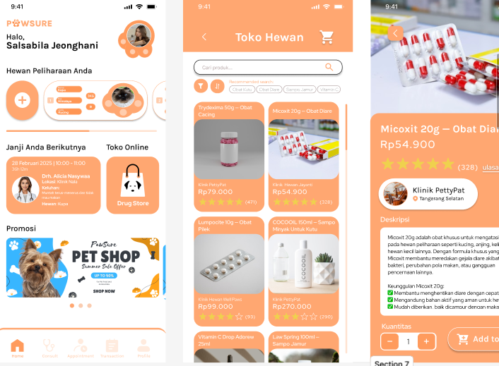
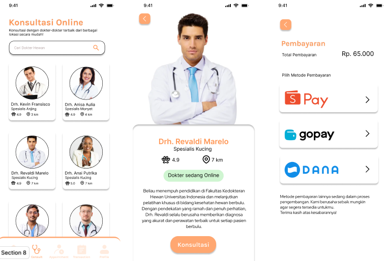

Tentang Proyek
PawSure adalah proyek semester 4 saya untuk mata kuliah Information System Analysis and Design. Aplikasi ini dirancang sebagai sistem layanan kesehatan hewan, dengan fokus pada desain sistem melalui UML (usecase diagram, activity diagram, sequence, dst.) dan prototype UI/UX. PawSure akan mendukung berbagai fitur seperti registrasi & login pengguna, penjadwalan konsultasi antara pemilik hewan dan dokter, serta pengelolaan catatan medis hewan.
Untuk detail lebih lanjut, silakan unduh dokumentasi proyek di bawah ini.
Lihat Dokumentasi Lengkap (PDF)Galeri Visual
Beberapa tangkapan layar dari antarmuka aplikasi PawSure.


